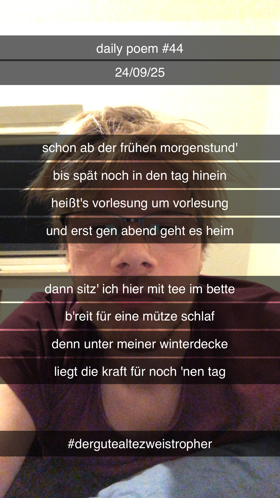

Schon ab der frühen Morgenstund'
Schon ab der frühen Morgenstund',
Bis spät noch in den Tag hinein,
Heißt's Vorlesung um Vorlesung,
Und erst gen Abend, geht es heim;
Dann sitz' ich hier mit Tee im Bette –
B'reit für eine Mütze Schlaf –
Denn unter meiner Winterdecke
Liegt die Kraft für noch 'nen Tag.
